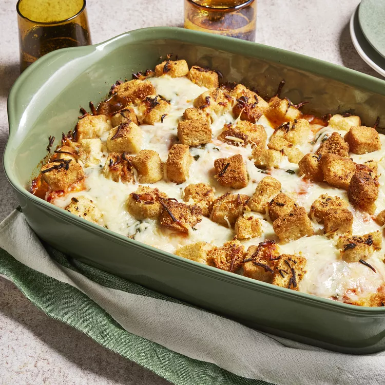

Chicken Bake

The Best Parmesan Chicken Bake
This Parmesan-style chicken bake is done casserole style (so, no breading or frying!), but still offers up that irresistible combination of tender chicken, crunchy-cheesy coating, and flavorful sauce.
Ingredients
- 2 tablespoons olive oil
- 2 cloves garlic, crushed and finely chopped
- ¼ teaspoon crushed red pepper flakes, or to taste
- 6 skinless, boneless chicken breast halves
- 2 cups prepared marinara sauce
- ¼ cup chopped fresh basil
- 1 (8 ounce) package shredded mozzarella cheese, divided
- ½ cup grated Parmesan cheese, divided
- 1 (5 ounce) package garlic croutons
Directions
- Preheat the oven to 350 degrees F (175 degrees C).
- Coat the bottom of a 9x13-inch casserole dish with olive oil, and sprinkle with garlic and red pepper flakes.
- Arrange chicken breasts in the bottom of the dish, and pour marinara sauce over chicken. Sprinkle basil over marinara sauce, and top with 1/2 of the mozzarella cheese, followed by 1/2 of the Parmesan cheese. Sprinkle on croutons, then top with remaining mozzarella cheese and remaining Parmesan cheese.
- Bake in the preheated oven until cheese and croutons are golden brown and the chicken is no longer pink inside, about 35 minutes to an hour, depending on the shape and thickness of your chicken breasts. An instant-read thermometer inserted into the thickest part of a chicken breast should read at least 160 degrees F (70 degrees C).
Chef's Notes:
Use more marinara sauce if you like. And fake Parmesan will not taste the same… Go buy some real Parmigiano-Reggiano!